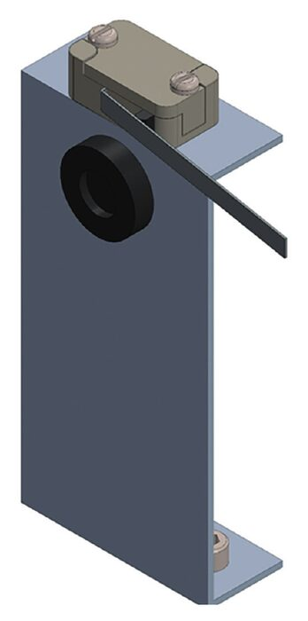
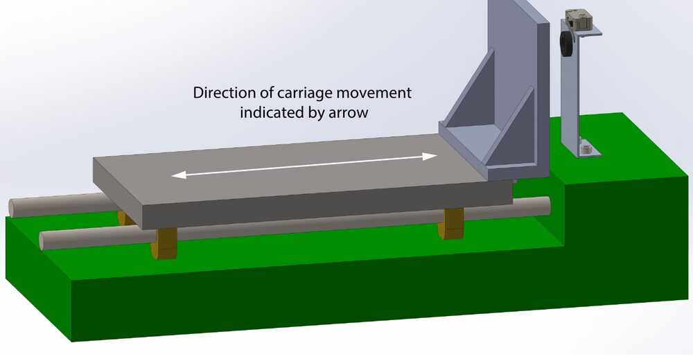
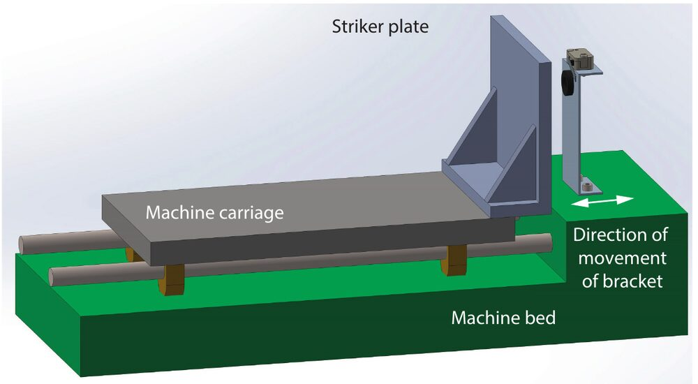

Hi everyone. I am running a little late today, so I want you to start this activity on your own while I get there.
It brings together everything we have covered so far, from design triggers to IPR, using a real product from a past Pearson assignment. Work on your own. This is an individual activity, not a group task.
You will need paper and a pen. Four of the tasks are written by hand, just like Part B of your real assignment, where you cannot use a computer.
What you will do:
| Read the client brief |
| Part 1: Design triggers |
| Part 2: Design challenges |
| Part 3: Equipment and system level, then a paper task |
| Part 4: Customer, brief and PDS |
| Part 5: Protecting your design (IPR), then a paper task |
| Part 6: Write a PDS (paper) |
| Part 7: Explain the triggers (paper) |
Your score is sent to me at the end. Keep your paper answers. I will check them when I arrive.
You are a manufacturing engineer. Your company uses semi automatic machines to make parts. You have been asked to redesign a bracket for a microswitch on these machines.
The bracket stops the moving carriage of the machine at a set point so the next operation can happen. When the carriage hits the rubber stop, it also presses the microswitch, which tells the machine controller to stop the motor.
The bracket is aluminium, about 100 mm high, 50 mm wide and 20 mm deep. It bolts to two fixed holes in the machine bed. The machines work in a mildly corrosive environment. Brackets are made in batches of 5.
Problems reported by the machine operators:
The new bracket must:


